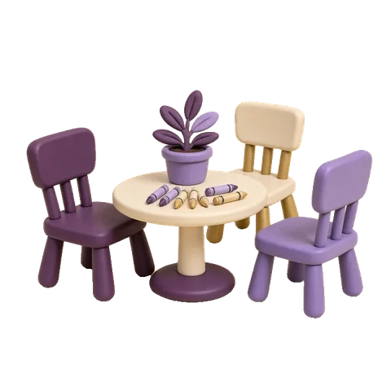
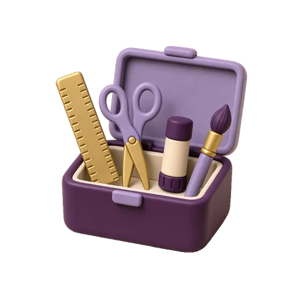

הכיתה שלי
התכנון השבועי, הכיתה וההורים – במקום אחד, בטלפון. מעלים את התכנון של השבוע, והאפליקציה מסדרת לבד: מה עכשיו, מה הבא ומה להכין.
מה יש בפנים
עכשיוהשיעור שמתקיים עכשיו, כמה דקות נשארו, הקבצים שלו ומה בא אחריו.
להכיןמה להדפיס, כמה עותקים ומה להביא – עם הצעות שנגזרות מהשיעורים עצמם.

הכיתהנוכחות בלחיצה, מקומות ישיבה, ניקוד לקבוצות, רמזור רעש וכרטיס לכל ילד.יומן כיתהרושמים הערה בשנייה – גם בקול – ורואים מה פתוח לטיפול.
ציונים והערכותמבחנים והכתבות, ממוצעים ומגמות, דפים לאסיפת הורים וטיוטות להערכה בתעודה.

מסך הכיתהמקרינים מהטלפון למחשב בכיתה: טיימר, "מי עונה?", הכתבה, רמזור ושיעורים.איך מתקינים?
- פותחים את noa-hakita.netlify.app בספארי (לא בתוך וואטסאפ – שם לוחצים "פתיחה בספארי").
- לוחצים על כפתור השיתוף – הריבוע עם החץ למעלה, בתחתית המסך.
- גוללים ובוחרים "הוספה למסך הבית", ואז "הוספה".
- פותחים את הכיתה שלי מהאייקון החדש במסך הבית – ומאשרים התראות כשהאפליקציה מבקשת.
- פותחים את noa-hakita.netlify.app בכרום.
- לוחצים על ⋮ בפינה העליונה.
- בוחרים "התקנת אפליקציה" (או "הוספה למסך הבית").
- פותחים את הכיתה שלי מהאייקון החדש – ומאשרים התראות כשהאפליקציה מבקשת.
אחרי ההתקנה האפליקציה נפתחת במסך מלא, עובדת גם בלי אינטרנט ויכולה לשלוח התראת "בוקר טוב".
המידע על התלמידים נשמר בטלפון ובחשבון שלך בלבד.